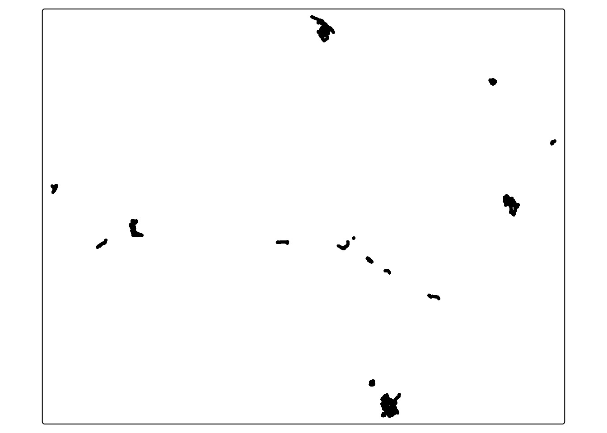
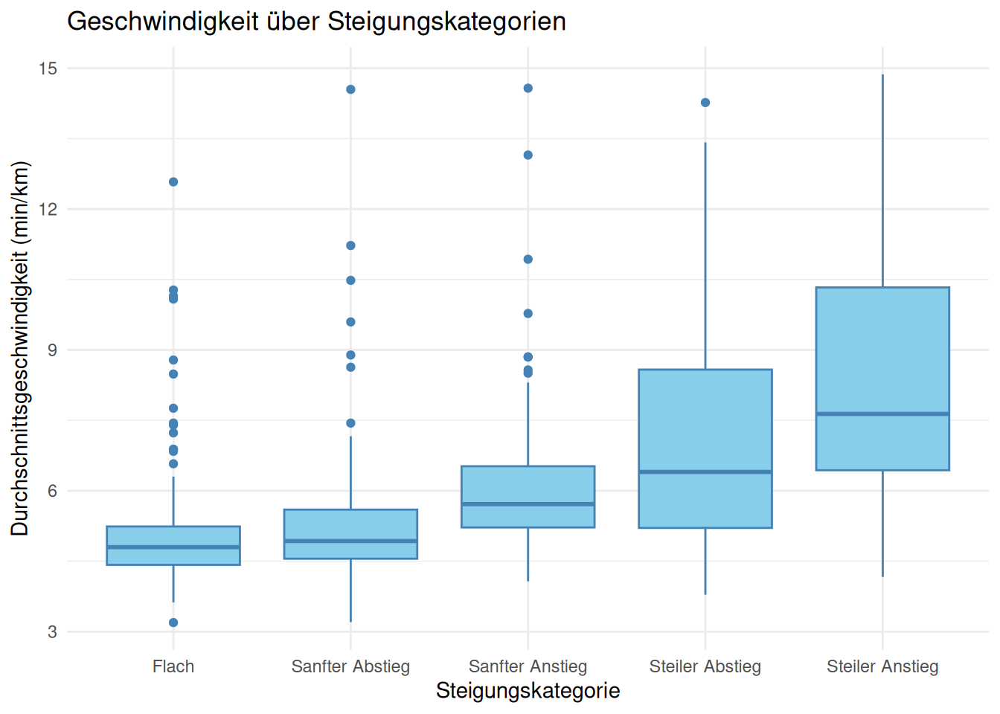

preprocessing
load(file = "my_workspace.RData")
library(tmap)Performance during training phases on various terrain slopes.
load(file = "my_workspace.RData")
library(tmap)To improve running performance, technology is advancing, providing athletes with tools to optimize their training. This study focuses on analysing GPS data from 165 running sessions recorded by Daniel from 2016 to 2023 using a Garmin sport watch.
Our objective was to identify patterns in Daniel’s running behaviour with a focus on different slope gradients and the phases of the training session (beginning, middle, or end). The derived goal was to provide insights for performance improvement. The runs were categorized based on slope into five classes: flat, gentle descent, gentle ascent, steep descent, and steep ascent. Each run was divided into 300-meter segments, and speeds were analysed for these segments.
Results show that Daniel’s highest speeds were on flat and gently descending terrain, while his lowest speeds were on steep ascents. Variability in speed was highest in challenging terrains, suggesting inconsistent pacing behaviour. Additionally, we observed that Daniel typically starts his runs at a faster pace, which declines in later stages, except in steeply ascending sections where his speed increases towards the end. This indicates that Daniel could benefit from better pacing, especially in less challenging terrain in the initial stages of his runs, to maintain a more consistent speed throughout.
The study highlights the importance of targeted pacing strategies to enhance overall running performance. Future analyses could further differentiate between regular runs and interval or sprint workouts to refine training recommendations.
Running is a popular sport that many people in Switzerland engage in for physical fitness and balance. The proportion of people who jog has significantly increased for both men and women since 2014, and in 2020, 10,0% of the population identified jogging as their main sport. (Bürgi et al., 2021). To improve running performance, whether for an upcoming race or personal goals, it is crucial to understand one’s strengths and weaknesses in running behaviour. This understanding allows for targeted training adjustments and enabling runners to optimize their performance. Positional and temporal movement patterns can be assessed using global positioning system (GPS) units.
In sports, GPS devices are increasingly used to gain insights into movement patterns and detect subtle differences in sport performance (Hodun et al., 2016). GPS sport watches have become an accurate tool for tracking GPS locations (Johansson et al., 2020). For example, GPS data has been used to analyse speed, acceleration, and exertion index in rugby players, providing a better understanding of the requirements of different positions (Jones et al., 2015). Analysing recorded training data has also proven to be useful for runners. For instance a study of marathon finishers showed that a training regime consisting of many long sessions at low intensities and an overall high volume positively impacted the finishing time (Zrenner et al., 2021).
Such analyses underline that calculating movement parameters such as speed or distance of trajectories can provide useful information that can be implemented in training to improve performance and elicit specific adaptations.
In this project, we analysed running trajectories of Daniel from the years 2016 to 2021. He recorded a total of 165 running sessions on his Garmin watch with STRAVA. Our objective was to identify patterns in his running behaviour. The GPS data is used to derive information on velocity, providing detailed insights into his performance. First, we defined five categories based on the slope of the terrain. Those categories are:
Flat: from -2% to +2%
Gentle Descent: from -2% to -8%
Gentle Ascent: from 2% to 8%
Steep Descent: less than -8%
Steep Ascent: more than +8%
The runs were then divided into 300-meter segments, and each segment was assigned to a category. The scale of segmentation is sensitive and influences the interpretation of the results. Deciding the appropriate degree of granularity is crucial and must be considered when interpreting the results (Laube & Purves, 2011).
In this project we will address these following research questions:
We then further want to investigate how he could improve his running based on our findings. #Data and Methods
For this project, we utilized the movement trajectories tracked by Daniel during his running sessions. The GPS devise he used was a GARMIN forerunner 245 sport watch. In total he recorded 165 running sessions from the years 2016-2023. Our analysis focused exclusively on the runs he completed in Switzerland. The GPS point features, along with additional information such as altitude and distance are stored in a .FIT file (vector). Daniel’s runs were recorded using the “smart recording” setting, which results in an irregular recording interval. This setting typically records more frequently during non-linear movements and less frequently during linear and regular movements. The sampling rate varies between 1 and 10 seconds. To exclude runs that were not in Switzerland we used the ‘rnaturalearth’ package (Massicotte & South, 2023).
To ensure the GPS fixes are usable for our R analysis, substantial preprocessing work is required. First, we need to extract the .fit files from the compressed .gz archives. To do so, we create a function that reads the .gz file and writes it to a .fit file in the previously specified output directory.
Using the metadata file, we filter all the activities to find the filenames of the running activities only. This allows us to then filter and match the file names with the extracted .fit files. If they corresponded, we kept them, otherwise we deleted them.
Next, we imported the .fit files into RStudio. To work with relevant information for our spatial analysis such as the coordinates, we then transformed .fit files into sf objects. To make the data frames tidy, we then harmonized the column names and deleted unnecessary columns some files had. The coordinates of the now tidy data frames must then be further transformed into the LV95 coordinate system. Since we only want to analyse runs that took place in Switzerland, we use the spatial intersection function to exclude any geometries that fall outside the country’s boundaries. This results in having a filtered data frame consisting of point features in the CH03/LV95 coordinate system with columns timestamp, distance, speed and altitude (see (Plot1?)).
tmap_mode("plot")
tm_shape(filtered_data) +tm_dots()
The segmentation of the running sessions was done by dividing them into approximately 300-meter intervals starting from the initial point. The maximum distance for each segment is 300 meters, while a minimum threshold of 250 meters was set. This excluded most of the final segments of the runs from the analysis, which are often much shorter than 300 meters and could distort the results.
The slope is calculated by the change of two consecutive altitudes over a given distance. Altitudes are recorded with the GPS watch. The slope in percent is calculated by the altitude change divided by the step length times 100. Next, the segments were pooled into the five different slope categories based on their slope percentage.
For calculation of the mean speed for each segment, we need two measurements: the time elapsed and the distance covered. First, we calculated the time lag in seconds between the beginning and the end of a measured segment. We then divided the elapsed time by the length of the segment (250-300 m). Mean running speeds that were slower than 15 min/km were excluded, since they do not reflect normal running speed and may be introduced through a stop in the recording of the watch.
We wanted to analyse how the slope affects the running speed in Daniel’s runs. In order to do so, we plotted the average speed over 300m segments categorized into five slope categories (see (Plot2?)). The number of segments within each category are as follows: flat: 421, gentle descent: 269, gentle ascent: 261, steep descent: 121, steep ascent: 100.
Daniel reached the highest speed on flat (median = 4.70 min/km, SD: +/- 1.14 min/km) and gentle descent sections (median = 4.73 min/km, SD: +/- 1.12 min/km) in his runs. Running speed was reduced in gentle ascents (median = 5.33 min/km, SD: +/- 1.67 min/km) and steep descents (median = 5.56 min/km, SD: +/- 2.34 min/km). The lowest running speed was measured for steep ascents (median = 6.92 min/km, SD: +/- 2.90 min/km). The data shows a high standard deviation for all slope categories, indicating inconsistent average speeds in different section and different runs overall.
plot2
table1| slope_category | median | standardabweichung | segmentanzahl | durchschnittliche_steigungsprozente |
|---|---|---|---|---|
| Flach | 4.798956 | 1.153950 | 206 | 0.0496802 |
| Sanfter Abstieg | 4.929323 | 1.467206 | 128 | -4.3148707 |
| Sanfter Anstieg | 5.716357 | 1.701781 | 89 | 4.3396612 |
| Steiler Abstieg | 6.401274 | 2.425968 | 49 | -20.5616710 |
| Steiler Anstieg | 7.636627 | 2.953572 | 51 | 15.0438051 |
To investigate how the running speed varies between different stages of Daniel’s run we plotted the median speed for the first third, the second third and the last third of the total segments (see (Plot3?)). To account for the role of different slopes in those sections, speeds are shown for the different slope categories defined above. For all slope categories except steep ascents, Daniel ran the initial third (flat: 4.52 min/km, SD: +/- 0.98min/km, gentle descent: 4.40 min/km, SD: +/- 0.85 min/km, steep descent: 4.77 min/km, SD: +/- 1.25 min/km, gentle ascent: 5.07 min/km, SD: +/- 1.39 min/km) always at a higher speed than the middle and the final third. Subsequently, the middle third (flat: 4.80 min/km, SD: +/- 0.99 min/km, gentle descent: 4.69 min/km, SD: +/- 0.52 min/km, steep descent: 5.06 min/km, SD: +/- 2.54 min/km, gentle ascent: 5.39 min/km, SD: +/- 1.60 min/km) and the final third (flat: 4.81 min/km, SD: +/- 1.36 min/km, gentle descent: 5.09 min/km, SD: +/- 1.42 min/km, steep descent: 6.08 min/km, SD: +/- 2.46 min/km, gentle ascent: 5.50 min/km, SD: +/- 1.90 min/km) of his runs were absolved at a very similar speed. For steep ascents, Daniel ran the initial third (6.76 min/km, SD: +/- 3.53 min/km) and the middle third (7.26 min/km, SD: +/- 2.05 min/km) at very similar speed, but the measured speed increased considerably in the final third (6.21 min/km, SD: +/- 3.39 min/km) of his runs.
For the analysis of this project we used Rstudio (Posit team, 2023). To generate the code, we followed either the exercises we did in class of the module ‘pattern and trends’, came up with own ideas, asks our friends from class and Nils, or used ChatGPT as a source (OpenAI, 2024).
table2| slope_category | phase | median | standardabweichung | segmentanzahl | durchschnittliche_steigungsprozente |
|---|---|---|---|---|---|
| Flach | Anfang | 4.506769 | 0.7806439 | 69 | 0.1967163 |
| Flach | Ende | 5.004469 | 1.3814085 | 67 | -0.0610159 |
| Flach | Mitte | 4.866751 | 1.0994441 | 70 | 0.0106964 |
| Sanfter Abstieg | Anfang | 4.556416 | 1.0541033 | 50 | -3.9475666 |
| Sanfter Abstieg | Ende | 5.382510 | 1.8894618 | 52 | -4.8762597 |
| Sanfter Abstieg | Mitte | 5.025180 | 0.5974215 | 26 | -3.8984469 |
| Sanfter Anstieg | Anfang | 5.185485 | 1.8349192 | 28 | 4.0530858 |
| Sanfter Anstieg | Ende | 6.076072 | 1.4920417 | 31 | 4.3522091 |
| Sanfter Anstieg | Mitte | 5.776804 | 1.7675744 | 30 | 4.5941654 |
| Steiler Abstieg | Anfang | 5.110878 | 1.5130373 | 10 | -28.7716676 |
| Steiler Abstieg | Ende | 6.505309 | 2.6006103 | 33 | -16.0695646 |
| Steiler Abstieg | Mitte | 7.570879 | 1.7205787 | 6 | -31.5849288 |
| Steiler Anstieg | Anfang | 8.126848 | 3.4404757 | 13 | 15.3613082 |
| Steiler Anstieg | Ende | 11.145475 | 4.0984435 | 7 | 15.4151619 |
| Steiler Anstieg | Mitte | 7.509476 | 2.3762346 | 31 | 14.8268039 |
In this work we analyzed the running performance of Daniel over 165 runs and determined the impact of the slope on his running speed, as well as his differences in performance over the duration of a run.
Some of the variability in the data can be attributed to factors such as forgetting to stop the activity on the watch at the end of the training session or taking breaks during the workout. In fact, speed is based on the time-stamped recording of points, which is provided in time format. With a Garmin watch, it is possible to pause the activity and resume it later. To address this issue, we decided to eliminate consecutive points with the same coordinates and points with a speed lower than 15 min/km. Other extremely fast or slow values may be due to specific types of workouts like intervals and sprints. In the case of uphill training, interval sprints are performed on a short track where uphill sprints are done at maximum speed, and energy is recovered by returning to the starting point at a low speed on the downhill. These uphill workouts usually do not exceed segments of 100-200 meters. Since they are performed repeatedly on the same track, the elevation difference might be negligible or considered a gentle slope. The average speed would still be lower compared to a steady-paced run on a normal route. The same applies to interval training on flat terrain. During interval workouts on flat terrain exceeding 300 meters, very fast segments can be recorded during sprints and very slow segments during recovery phases. There are interval workouts of 500 to 1000 meters where the speed on flat terrain can reach 3:30 min/km.
Consistent with our expectation, the running speed was highest in flat and gently descending sections of his runs and declined in steeply descending or ascending terrain. While the variation in the measured speeds was lowest in flat sections, we saw a big increase in variability for running speeds measured in descending and ascending terrain. The highest variability was measured in steeply ascending terrain. This could indicate a lack of consistent pacing behaviour in challenging terrain but is more likely to be explained by the pooling of all sections that have an ascending slope of more than 8%, and thus potentially containing much steeper sections as well as sections that are just slightly steeper than 8%.
Daniel typically started off his runs at a faster pace, that then dropped in the second and last third of his runs. The faster speeds in the beginning, that drop off during later stages of his runs indicate that Daniel starts his runs too fast and can’t maintain those speeds over prolonged periods of times. This behaviour is not observed in steeply ascending sections, indicating that Daniel paces himself well in more challenging terrain. The middle and the final sections are generally absolved at a very similar speed indicating that after the initial high starting speed Daniel settles for a pace that can be maintained over the rest of the run. If the final stretch is steeply ascending, the measured speeds are even higher in the last third compared to the middle third.
Overall, our data indicate, that Daniel could profit from an improved pacing especially in less challenging (flat, gently descending, gently ascending, steeply descending) terrain located at the beginning of his runs. Pacing himself well in those initial stages of his runs could significantly improve running performance overall.
Note: We did not have enough time to address the last research question, as we spent more than half of our time on heavy preprocessing. However, these results would have been very useful and interesting for a final assessment of Daniel’s running performance.
Bürgi, R., Lambrecht, M., & Stamm, H. P. (2021). Sport Schweiz 2020: Factsheets Sportarten (p. 60). Bundesamt für Sport. https://www.sportobs.ch/inhalte/Downloads/Sport_Schweiz_2020_factsheets_d_screen.pdf.pdf
Hodun, M., Clarke, R., De Ste Croix, M. B. A., & Hughes, J. D. (2016). Global Positioning System Analysis of Running Performance in Female Field Sports: A Review of the Literature. Strength & Conditioning Journal, 38(2), 49–56. https://doi.org/10.1519/SSC.0000000000000200
Johansson, R. E., Adolph, S. T., Swart, J., & Lambert, M. I. (2020). Accuracy of GPS sport watches in measuring distance in an ultramarathon running race. International Journal of Sports Science & Coaching, 15(2), 212–219. https://doi.org/10.1177/1747954119899880
Jones, M. R., West, D. J., Crewther, B. T., Cook, C. J., & Kilduff, L. P. (2015). Quantifying positional and temporal movement patterns in professional rugby union using global positioning system. European Journal of Sport Science, 15(6), 488–496. https://doi.org/10.1080/17461391.2015.1010106
Laube, P., & Purves, R. S. (2011). How fast is a cow? Cross‐Scale Analysis of Movement Data. Transactions in GIS, 15(3), 401–418. https://doi.org/10.1111/j.1467-9671.2011.01256.x
Massicotte, P., & South, A. (2023). rnaturalearth: World Map Data from Natural Earth. https://CRAN.R-project.org/package=rnaturalearth
OpenAI. (2024). Discussion on calculating speed from GPS data in R. https://chat.openai.com/
Posit team. (2023). RStudio: Integrated Development Environment for R. Posit Software, PBC. http://www.posit.co/
Zrenner, M., Heyde, C., Duemler, B., Dykman, S., Roecker, K., & Eskofier, B. M. (2021). Retrospective Analysis of Training and Its Response in Marathon Finishers Based on Fitness App Data. Frontiers in Physiology, 12, 669884. https://doi.org/10.3389/fphys.2021.669884
library("pacman")
wordcountaddin::word_count("index.qmd")[1] 2694